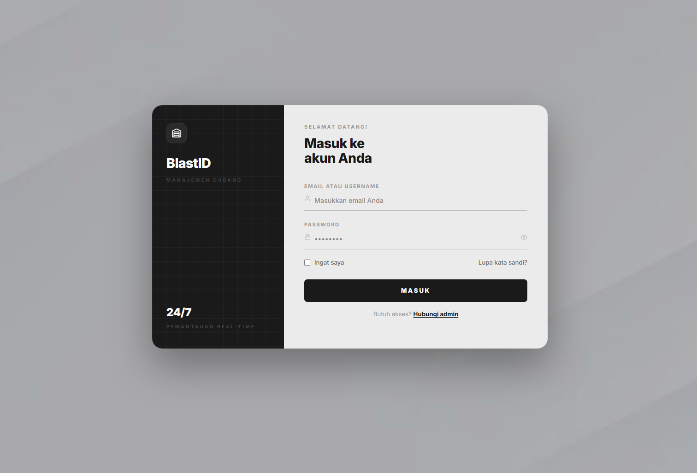
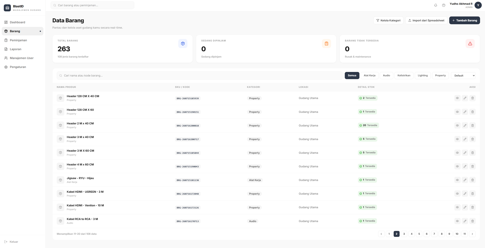
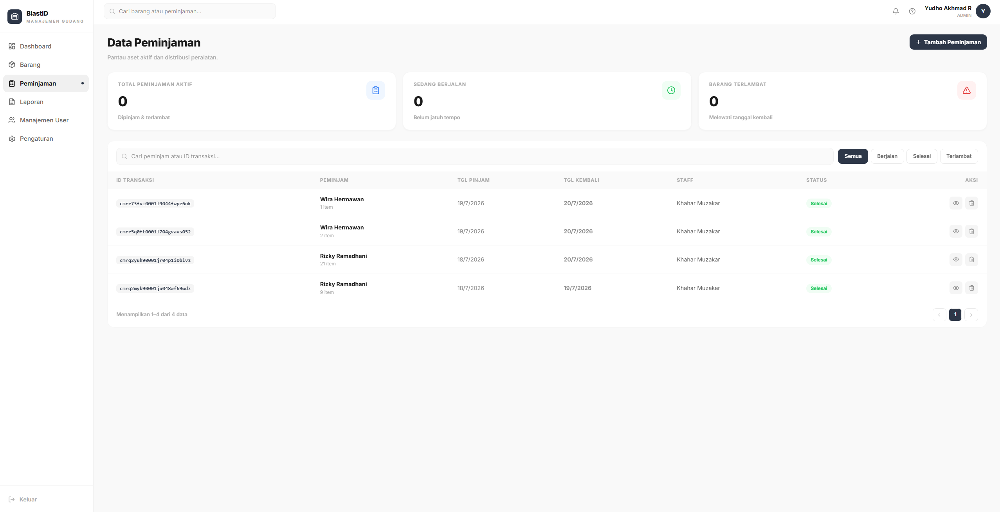
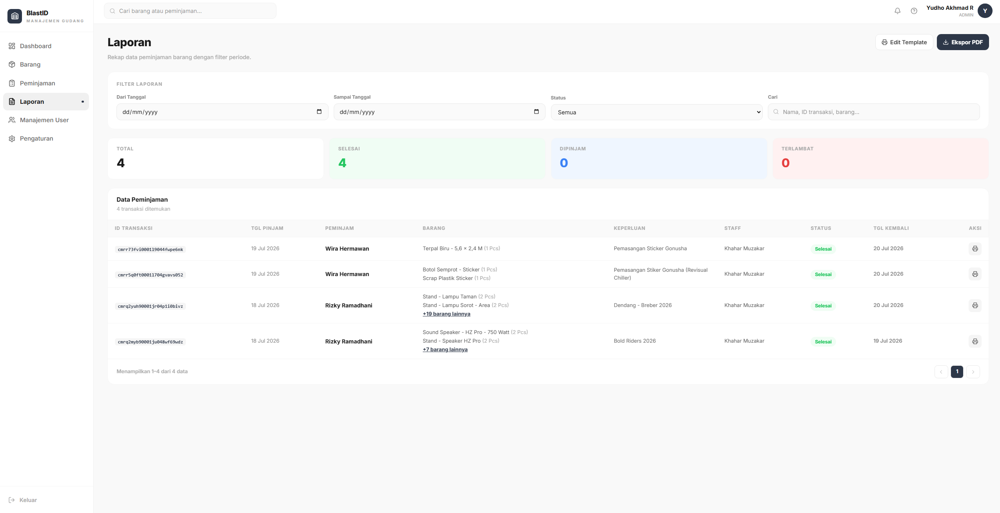

Sistem manajemen gudang dan peminjaman barang
Aplikasi web untuk mencatat stok inventaris, melacak barang yang dipinjam, dan mencetak laporan — menggantikan pencatatan spreadsheet yang selama ini dikerjakan manual.
- Peran
- Full-stack — desain database, backend, antarmuka, deployment
- Jenis
- Aplikasi internal untuk klien, dipakai staf gudang sehari-hari
- Status
- Live di produksi
- Kode
- Repositori privat — cuplikan representatif ada di bawah
Masalah
Pencatatan stok dan peminjaman barang dikerjakan lewat spreadsheet yang diisi bergantian oleh beberapa staf. Tiga hal yang paling sering jadi sumber kesalahan:
- Stok dan peminjaman tidak terhubung. Barang keluar dicatat di satu tempat, sisa stok di tempat lain, jadi keduanya cepat tidak sinkron.
- Barang rusak dan hilang tidak punya tempat. Saat barang kembali dalam kondisi tidak utuh, tidak jelas angkanya harus masuk ke kolom mana.
- Tidak ada jejak siapa mencatat apa. Kalau angkanya janggal, tidak ada cara menelusurinya.
Pendekatan
Inti keputusan desainnya: stok bukan satu angka, tapi empat. Setiap barang punya stok tersedia, rusak, maintenance, dan hilang secara terpisah. Perpindahan antar keempatnya hanya boleh terjadi lewat transaksi peminjaman dan pengembalian — tidak ada tombol “edit stok” yang bisa dipakai menambal selisih tanpa jejak.
Konsekuensinya, angka stok selalu bisa dijelaskan asal-usulnya, dan laporan bulanan tidak perlu direkonsiliasi manual lagi.
Model data
Tujuh model. Peminjaman sengaja dipecah jadi induk dan detail supaya satu transaksi bisa memuat banyak barang, dan tiap barang bisa dikembalikan terpisah dengan kondisi yang berbeda-beda.
| Model | Perannya |
|---|---|
| User | Akun staf, dengan peran ADMIN atau STAFF |
| Kategori | Pengelompokan barang |
| Barang | Item inventaris beserta empat jenis stoknya |
| Peminjam | Pihak yang meminjam, dipakai ulang antar transaksi |
| Peminjaman | Induk transaksi: siapa, kapan, keperluan, tenggat |
| PeminjamanDetail | Baris per barang, dengan status dan kondisi kembali sendiri |
| PengaturanApp | Kop instansi dan data tanda tangan untuk dokumen cetak |
Fitur
Inventaris
Daftar barang dengan pencarian, filter kategori, dan paginasi di sisi server.
Peminjaman multi-barang
Satu transaksi memuat banyak item; stok berkurang otomatis saat transaksi dibuat.
Pengembalian per item
Tiap barang dikembalikan sendiri-sendiri dengan kondisi Baik, Rusak, atau Hilang — masing-masing masuk ke kolom stok yang berbeda.
Notifikasi jatuh tempo
Peminjaman yang lewat tenggat atau jatuh tempo hari ini ditandai di header.
Pencarian global
Satu kotak cari menjangkau barang dan transaksi sekaligus, dijalankan di database.
Impor & ekspor CSV
Data barang bisa dimuat massal dari CSV, dan laporan diunduh dalam format yang langsung rapi di Excel.
Laporan cetak
Dokumen serah-terima dengan kop instansi dan blok tanda tangan yang bisa dikonfigurasi.
Manajemen pengguna
Admin mengelola akun staf; aksi sensitif dibatasi berdasarkan peran.
Tampilan





Teknologi
tRPC dipilih supaya tipe data mengalir dari skema database sampai ke komponen tanpa perlu menulis ulang tipe di sisi klien — perubahan skema langsung terlihat sebagai error kompilasi, bukan bug yang baru ketahuan saat dipakai.
Beberapa keputusan teknis
return await prisma.$transaction(async (tx) => { // Cek & kurangi stok semua barang dalam satu transaksi for (const item of items) { const barang = await tx.barang.findUnique({ where: { id: item.barangId } }); if (!barang || barang.stok < item.jumlah) { throw new TRPCError({ code: "BAD_REQUEST", message: `Stok ${barang?.nama} tidak mencukupi`, }); } await tx.barang.update({ where: { id: item.barangId }, data: { stok: { decrement: item.jumlah } }, }); } return await tx.peminjaman.create({ /* ... */ }); });
protectedProcedure atau
adminProcedure, jadi endpoint baru tidak bisa lupa dilindungi.
export const protectedProcedure = t.procedure.use(({ ctx, next }) => { if (!ctx.session?.user) throw new TRPCError({ code: "UNAUTHORIZED" }); return next({ ctx: { session: ctx.session } }); }); export const adminProcedure = protectedProcedure.use(({ ctx, next }) => { if (ctx.session.user.role !== "ADMIN") throw new TRPCError({ code: "FORBIDDEN" }); return next({ ctx }); });
// Pemisah ";" bukan ",": Excel dengan regional Indonesia memakai ";" // sebagai list separator — dengan koma, seluruh baris menumpuk di satu kolom. // Diawali BOM UTF-8: tanpa itu Excel membaca file sebagai ANSI dan // huruf beraksen jadi berantakan. const DELIMITER = ";"; const BOM = ""; export function buildCsv(headers, rows) { const lines = [headers, ...rows].map(r => r.map(escapeCell).join(DELIMITER)); return BOM + lines.join("\r\n"); }
// Longgar sampai +36 jam; penggolongan pastinya di sisi klien. const batas = new Date(Date.now() + 36 * 60 * 60 * 1000); return await prisma.peminjaman.findMany({ where: { status: "DIPINJAM", tanggalKembali: { not: null, lte: batas } }, orderBy: { tanggalKembali: "asc" }, });
Yang saya pelajari
Bagian tersulit bukan fiturnya, tapi memodelkan kenyataan di gudang dengan jujur. Versi pertama memakai satu kolom stok dan satu status kondisi per barang. Model itu langsung runtuh begitu ada kasus nyata: sepuluh unit dipinjam, tujuh kembali baik, dua rusak, satu hilang. Satu baris barang tidak bisa berada di empat kondisi sekaligus.
Perbaikannya adalah memindahkan kondisi ke level baris transaksi, bukan level barang. Pelajarannya: kalau sebuah field terasa sulit diisi, biasanya masalahnya ada di model data, bukan di formulirnya.
Catatan soal akses kode. Repositori bersifat privat karena ini aplikasi internal klien. Cuplikan di halaman ini diambil langsung dari basis kode produksi.